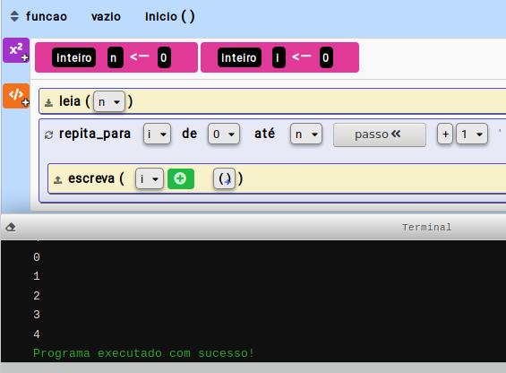
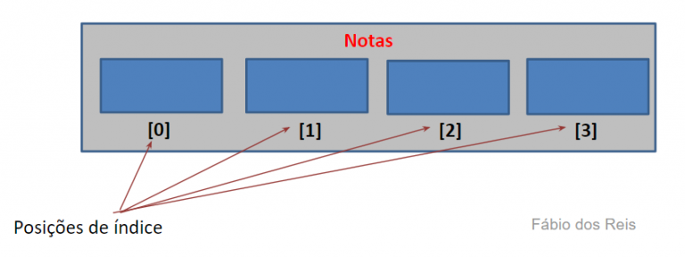

| |
Trabalho de MAC118 - 2021 Aula 01 - Alguns comandos no iVprog
Apresentação
Nessa aula vamos introduzir alguns comandos que serão interessantes para as Atividades seguintes realizadas no iVprog.
Comando Se/Senão
Esse comando é essencial para permitir que sob determinada condição (uma expressão lógica) o fluxo de execução siga um ou outro caminho. Assim, nesse comando, pode-se subordinar a execução de um bloco de comandos por alguma expressão lógica EL e, opcional, se a EL resultar falso, pode-se executar um outro bloco de comandos (bloco do senão).
A sintaxe desse comando é:
se ( CONDICAO ) {
BLOCO_DE_COMANDOS;
} senão {
BLOCO_DE_COMANDOS;
}
Abaixo apresentamos um exemplo da programação no iVprog que solicita que o usuário digite um (1) número inteiro, e em seguida, imprima se o valor é o número 10 ou não.

Comando Repita N vezes
Esse comando permite executar um conjunto de comandos um número fixo de vezes, dado pelo indicador N. O N pode ser uma constante inteira ou uma variável inteira. Esse comando é conhecido como comando de repetição tipo para (ou for em linguagens de programação tradicionais).
A sintaxe desse comando é:
repita_para i de 0 até n passo +1{
BLOCO_DE_COMANDOS;
}
Abaixo apresentamos um exemplo da programação no iVprog que solicita que o usuário digite um (1) número inteiro, e em seguida, a quantidade de números que o usuário digitar será a quantidade de números sucessivos após 0 impressa.

Vetores
Um vetor é um array unidimensional, ou seja, de uma única dimensão; é análogo a uma linha única de dados em uma planilha ou tabela. A figura a seguir ilustra a estrutura interna de um vetor de quatro posições, que permite portanto armazenar até quatro dados, de nome Notas:

No geral a contagem das posições se inicia em zero (0), de modo que a primeira posição do vetor será a posição 0, a segunda posição será 1, e assim por diante; a última posição do vetor será a de número n – 1, onde n é o número total de posições disponíveis (tamanho do array). Assim, em um vetor de 4 posições a última posição será 4 – 1 = 3


|